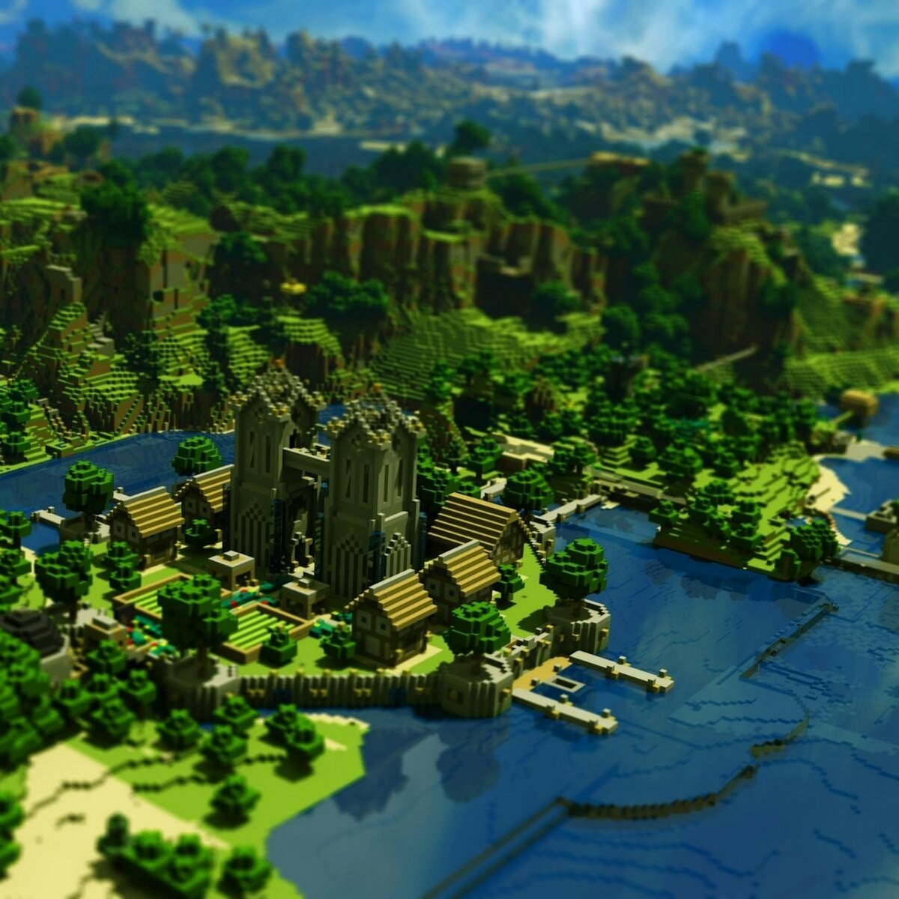

Перссон написал Minecraft на Java с использованием библиотеки графического вывода LWJGL, черпая идеи из таких игр, как Dwarf Fortress, Dungeon Keeper и Infiniminer. Minecraft даёт в распоряжение игрока процедурно генерируемый и изменяемый трёхмерный мир, полностью состоящий из кубов — его можно свободно перестраивать, создавая из этих кубов сложные сооружения — эта особенность делает игру схожей с конструктором LEGO.
Больше картинок Minecraft получила всеобщее признание среди игровой прессы и множество наград. Критики выделили такие основные достоинства, как реиграбельность, минималистичный дизайн, динамичный саундтрек и необыкновенную свободу творчества, ограниченную лишь фантазией игрока; недостатками они посчитали наличие недоработанных предметов и сложности с созданием сетевой игры, а также отсутствие в игре режима обучения.